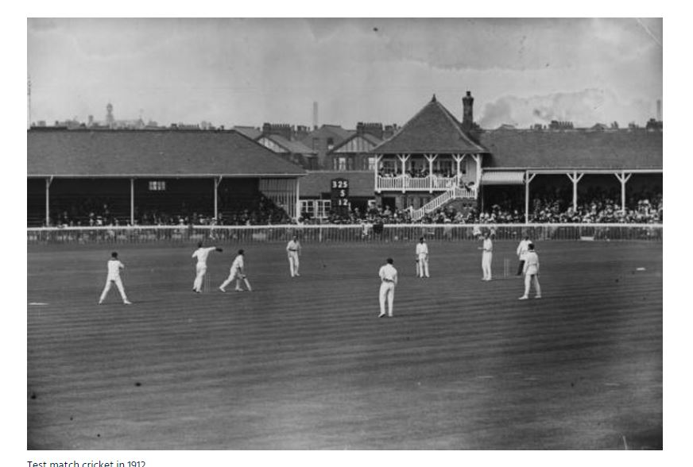

The governing body of world cricket, which has 105 countries currently in membership, began its life with some very tentative steps. On 30th November, 1907 the President of the South African Cricket Association, Abe Bailey, wrote a letter to F.E. Lacey, MCC Secretary. Bailey, having accompanied the South African team on their tour of England, was now on his way home.
